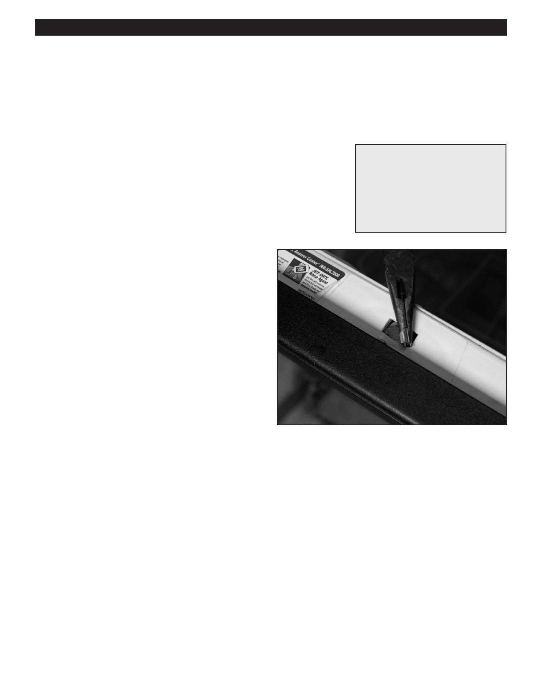

PA RT I C I PA N T R E S O U R C E G U I D E
Adjusting the Door Latch and Testing the
Door Latch Switch
A dishwasher door that does not properly latch may simply need adjustment. Or the
door latch switch may need to be replaced.
Safety
Tools and Materials Needed
Make sure the power to the dishwasher is off.
Screwdriver
Use lockout/tagout procedures.
Insulated combination tool
Lockout/tagout device
Wear eye protection when working with electrical systems.
Multimeter
Door latch switch
How-to Steps
1. Unplug dishwasher or turn off electricity to dishwasher at
main electrical panel.
2. Lockout/tagout the panel.
3. Loosen the latch bolts, align latch and tighten bolts.
Check operation.
4. Use multimeter on RX1 setting to test the latch:
• Touch one probe to one terminal and the other probe
to the other terminal.
• The meter should indicate continuity with the switch
button pushed in; and an open circuit when it’s out.
Replace the switch if your test results are different.
5. To replace switch, remove switch bolts and install a new
latch. Check alignment.
6. Turn on electricity to dishwasher.
7. Turn on dishwasher and check operation.
Notes:
74